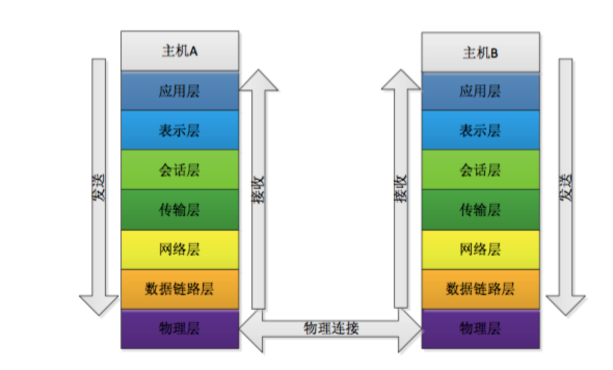

七层模型介绍：
物理层：物理层负责最后将信息编码成电流脉冲或其它信号用于网上传输。
eg：RJ45等将数据转化成0和1
数据链路层：数据链路层通过物理网络链路供数据传输。不同的数据链路层定义了不同的w网络和协议特征，其中包括物理编址、网络拓扑结构、错误校验数据帧序列以及流控。
可以简单的理解为：规定了0和1的分包形式，确定了网络数据包的形式
网络层：网络层负责在源和终点之间建立连接
可以理解为，此处需要确定计算机的位置，怎么确定？IPv4，IPv6
传输层：传输层向高层提供可靠的端到端的网络数据流服务
可以理解为：每一个应用程序都会在网卡注册一个端口号，该层就是端口与端口的通信！常用的（TCP／IP）协议
会话层：会话层建立、管理和终止表示层与实体之间的通信会话
建立一个连接（自动的手机信息、自动的网络寻址）
表示层：表示层供多种功能用于应用层数据编码和转化，以确保以一个系统应用层发送的消息可以被另一个系统应用层识别
可以理解为：解决不同系统之间的通信，eg：Linux下的QQ和Windows下的QQ可以通信
应用层：应用层协议包括文件的传输、访问及管理协议（FTAM），以及文件虚拟终端协议（VIP）和公用管理系统信息（CMIP）等；
规定数据的传输协议；常见的应用层协议：HTTP，HTTPS，FTP
参考资料:
网络七层模型&&网络数据包